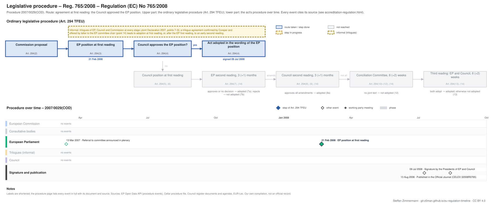

← All procedures · Regulation timeline
Procedure 2007/0029(COD), completed. Drawing: SVG · PNG · PDF (A3) · draw.io · Page as Markdown: accreditation-regulation.md
| Stage | Completed, published 13 Aug 2008 |
|---|---|
| Latest activity | 13 Aug 2008 · Signature and publication: Published in the Official Journal (CELEX 32008R0765) |

| Date | Actor | Event | Document | Source |
|---|---|---|---|---|
| 2007-03-13 | European Parliament | Referral to committee announced in plenary | EP procedure file | EP Open Data API, procedure 2007-0029 (REFERRAL) |
| 2008-02-21 | European Parliament | EP position at first reading (Art. 294(3) TFEU) | EP procedure file | EP Open Data API, procedure 2007-0029 (PLENARY_AMEND_PROPOSAL) |
| 2008-07-09 | Signature and publication | Signature by the Presidents of EP and Council | EP procedure file | EP Open Data API, procedure 2007-0029 (SIGNATURE) |
| 2008-08-13 | Signature and publication | Published in the Official Journal | CELEX 32008R0765 · en.md de.md | EP Open Data API, procedure 2007-0029 (PUBLICATION_OFFICIAL_JOURNAL) |
| Date | Document | Kind | Subject | Text |
|---|---|---|---|---|
| 2007-12-04 | A6-0491/2007 | ep-report | REPORT on the proposal for a regulation of the European Parliament and of the Council setting out the requirements for accreditation and market surveillance … | – |
Unofficial Markdown conversions for reading, searching and project folders; only the official document is authentic. "Read" opens the rendered text on GitHub, where a link to a provision (#art-13, #rec-12, #annex-i) jumps to it.
| Date | Stage | Document | Markdown | Read |
|---|---|---|---|---|
| 2008-08-13 | oj | CELEX 32008R0765 | en de | GitHub |